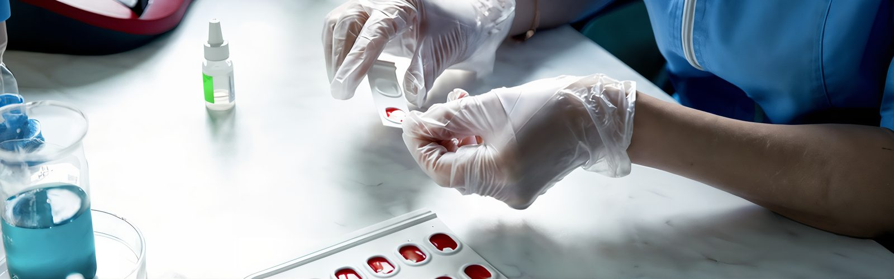

"War in the Blood": How the Blood Transfusion Center Operates During a Full-Scale Invasion
15.08.24
On February 24, 2022, the Kyiv Regional Blood Service Center in Bila Tserkva began working at six in the morning. In the bomb shelter beneath the Center, many people had gathered: medical workers, their children and relatives, neighbors from nearby houses. Some brought their pets; everyone was frightened. But above ground, work was in full swing. In the early days of the full-scale invasion, up to 500 donors came to the Center each day—all eager to donate blood.

"There were so many people that not everyone could fit into the operating room," says the head of the Center, Yana Cherchenko. At that time, a large room on the second floor, which on calmer days with its velvet chairs and stucco ceilings resembled a concert hall, was repurposed for blood transfusions.
According to DonorUA, 25,000 people registered in the donor database in the first week of the full-scale war. Previously, it would have taken 2–3 years to gather that many donors. However, despite people's desire to help the military, there is still a shortage of donor blood and components. Due to the Russian invasion, the need for blood has increased by 60%, says DonorUA. People continue to donate blood, but there aren't as many volunteers as before.

"War is already in people's blood. They’ve gotten used to it and stopped feeling the urgent need to help," says therapist Lyudmyla Polishchuk.
In mid-February 2024, after two years of full-scale war, we enter the half-empty building of the Regional Center. A soldier is standing by the registration desk—he wants to donate blood. There's no line behind him.
"Let's go," says Yana Mykolayivna. "I'll take you on a donor's journey."

Step 1: Clinical Laboratory
Immediately after registration, potential donors go to the clinical laboratory, where their blood type and hemoglobin level are determined.
"Let's determine your blood type," suggests lab technician Svitlana Volodymyrivna.
"I already know mine," I reply, cautiously eyeing the sharp lancets.
"Well, we'll just check," she smiles.

Many people think they know their blood type, but that’s not always the case. Older methods of determining blood type and Rh factor were used before, so mistakes were common. Now, the laboratory uses the most modern method—determining blood type with monoclonal reagents. Monoclonal reagents are developed in laboratories, react only with blood antigens, and unlike previous methods, can determine the blood type even with weakly expressed antigens in the sample.
While the agglutination reaction is taking place on the slides, Svitlana Volodymyrivna explains what determines blood type: "Red blood cells either have antigens A and B or don't have any. If there are no antigens, it's type 0(I), antigen A corresponds to type A(II), antigen B to type B(III), and if both antigens are present, it's type AB(IV)."

The prevalence of blood types depends on geography. In Africa, most people have the third blood type; here, the second and first are most common. The fourth type is the rarest in the world and is always in short supply at blood centers.
Step 2: Therapist
After determining their blood type and hemoglobin level, the donor goes to the therapist. The main principle of blood donation is to do no harm to either the donor or the recipient. Therefore, only healthy people are allowed to donate blood.

"We try to quickly find out as much as we can about the donor's health," says therapist Lyudmyla Mykolayivna. "We ask about chronic, oncological, autoimmune, and hematological diseases, and whether the patient is taking any medications. Cases of autoimmune diseases and diabetes have become more frequent. In the first case, blood cannot be donated because it contains too many antibodies or hormones the donor takes for treatment; in the second case, there may be too much glucose or insulin."

At this stage, the potential donor’s blood pressure and weight are also determined. I quickly refuse to be weighed, but I have to agree to the blood pressure measurement. While the automatic sphygmomanometer tightens the cuff on my arm, Lyudmyla Mykolayivna talks about what has changed at the Center since the start of the full-scale war:
"Now there are more mobile blood drives. Our Center not only serves the military but also 44 towns and villages in the Kyiv region. We have two 20-year-old vehicles that we use to travel to Yahotyn, Ivankiv, and other towns. The road takes a lot of time, and to get everything done, we get up at four in the morning. Sometimes the vehicle breaks down, and the trip takes even longer. We transport the blood in thermal containers, so it doesn't spoil, but the staff gets tired. The Center has only three therapists, and the need for blood is constantly increasing."
Step 3: Operating Room
The spacious operating room is lined with red chairs. But before donors are allowed to sit in one of them, they are taken to the cafeteria for tea with sugar and sweet cookies.
"Sugar dilates blood vessels, and blood donation is easier," explains Svitlana Volodymyrivna.

In one of the red chairs, the soldier we met earlier is reclining. Next to him, a bag is quickly filling with blood.
"Soldiers often come to us. They are the first to respond to the call to donate blood because they, more than anyone, understand how important it is," says Svitlana Volodymyrivna.

The entire procedure takes no more than 15 minutes. After the blood is donated, it is separated into red blood cells and plasma. Depending on the preservative, red blood cells can be stored for 35 to 42 days.
"But the blood doesn't stay with us that long," Yana Mykolayivna smiles.
I look around the nearly empty operating room and ask what the Center does when blood is urgently needed, but there are no donors.

"We have a base of regular donors. We call them and ask them to come," explains Yana Mykolayivna. "Blood can be donated once every two months, platelet concentrate and plasma every two weeks. Usually, we don't have problems with blood, but platelets are much more difficult. Donating platelets is a longer and more complicated process; not everyone has the necessary platelet count for donation. Unlike blood, platelets can only be stored for three days. So we can't stockpile them. Unfortunately, it often happens that while we are looking for a platelet donor, the patient who needs them dies."
Step 4: Testing
After donating blood, the donor goes to rest, and the Center begins the long and meticulous testing process. The first stop is the AIDS laboratory. Here, a large analyzer conducts tests for HIV/AIDS, hepatitis B and C, and syphilis.

"The whole process is automated—we just load the test tubes into the machine. We receive the results in the form of digital values, which are transferred to the donor database, so the human factor is completely excluded. We perform these tests after every blood donation, even if the donor comes to us every two months," says Vera Maksymets, head of the laboratory research department.

The next test is in the immunological laboratory. Here, the test tubes are sent to a centrifuge that spins at 3,400 revolutions per minute and separates the blood into plasma and red blood cells. Then the test tubes are loaded into another large analyzer, and the blood type and Rh factor are checked again, this time using gel cards and Swiss reagents. Unlike the previous test, this one uses more venous blood. I ask why they check the blood type twice.
"It's an order from the Ministry of Health," Svitlana Volodymyrivna replies. "Perhaps they want to eliminate any errors."

What happens if a person receives the wrong blood type? A strong immune reaction begins. For example, if a recipient has blood type 0(I) but receives type A(II) blood, their immune system will perceive antigen A as a foreign element and start attacking it. The recipient may develop post-transfusion shock, fever, or loss of consciousness. If the wrong blood type is transfused again, the recipient may die.
"In the Soviet Union, people with the first blood type were called 'universal donors,' and those with the fourth type were 'universal recipients.' Modern medicine has abandoned these concepts. We only transfuse blood and plasma of the same type to avoid dangerous consequences," says Svitlana Volodymyrivna.

Next, the blood goes to quality control. From all the blood collected in a day, at least one percent of samples are taken and tested to see if the number of red blood cells, platelets, and other elements meets the reference parameters. Previously, the Center also had a bacteriological laboratory where the blood was tested for infections, but it is now closed, so samples are sent to the Institute of Microbiological Research in Kyiv.
The final stop is the approval room. If a sample of blood was found to be defective in any of the previous tests, it is placed in a separate refrigerator, which is locked. Only one person has the key—this is done to ensure that defective blood is not mixed with normal blood before it is disposed of. Labels with all the information—the blood type, Rh factor, test results, etc.—are then attached to the remaining bags, and they are sent to storage.
Step 5: Storage
The collected blood is stored upright at a temperature of 2 to 6 degrees Celsius. Plasma, on the other hand, requires a minimum of -40 degrees Celsius for storage.

"Plasma can be stored for up to three years," says Svitlana Volodymyrivna, leading us into the basement-bomb shelter filled with freezers of plasma. "If the equipment fails, we immediately receive a notification that the storage temperature has been compromised. Last winter, during the power outages, we relied on a generator."
Cryoprecipitate, a product used to treat patients with oncological diseases and massive bleeding, is made from plasma.

"Cryoprecipitate, plasma, and red blood cells—these are the three components that can be obtained from one blood donation and that can save three lives," says Yana Mykolayivna. "We encourage everyone to donate blood. It's not scary, it's safe, and it's very important. We strive for systematic donation, where people donate blood not just at the start of a full-scale war but regularly, regardless of the circumstances. We would like to build a culture in Ukraine where we don't have to call people and ask them to donate blood. I hope we can achieve this someday."

You can learn more about becoming a blood donor, as well as the rules for preparing to donate, on the websites of the Kyiv Regional Blood Service Center and DonorUA.
Серія репортажів здійснена за підтримки проєкту Documenting Ukraine від Institut für die Wissenschaften vom Menschen.